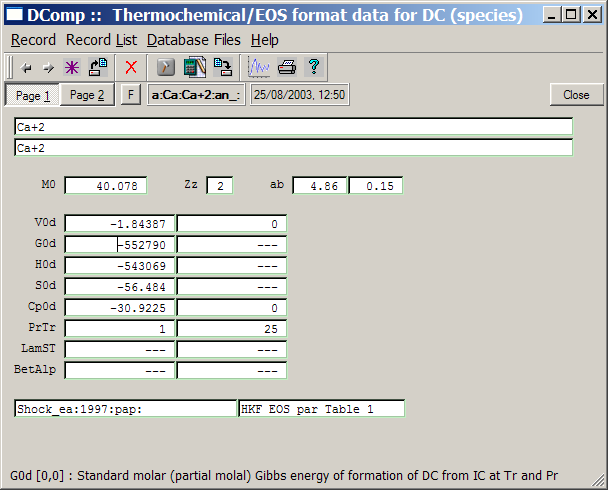

Previous Page Back to Start Page
(30)
Adding a Dependent Component (DComp)
definition record.
The easiest
way to add a dependent component (chemical species, substance) to the
project database is to open a similar record in the DComp window and
"clone" it, edit necessary data fields, and save it to the database
file.
Suppose, we
have to add the data for Ba+2 aqueous ion and its hydroxide
and carbonate complexes, available e.g. from Slop98.dat and Nagra-PSI
01/01 databases
(more in the pdf file TM-44-03-04.web
report). These partial molal data, sufficient to describe
partial molar Gibbs energies up to 200 - 250 oC temperature
and 1 kbar pressure, are listed below (at the reference temperature 25 oC,
pressure 1 bar).
| Species,
formula |
Ba+2
BaOH+ BaCO30
BaHCO3+ |
| Volume Vo, J/bar |
-1.29
0.916 -1.18
1.917 |
| Gibbs energy Go, J/mol |
-560782
-721077 -1104251 -1153325 |
| Absolute entropy So,
J/K/mol |
9.623
115.06 66.944
153.929 |
| HKF: a1 |
0.2738
0.307 0.0136 0.4387 |
| a2 |
-1005.65
-28.25 -744.61 293.25 |
| a3 |
-0.047
5.8541 8.6697
4.5904 |
| a4 |
-23633
-27672 -24711 -29002 |
| c1 |
3.8
-5.7064 -14.344 32.699 |
| c2 |
-34500
-75974 -100418 62029 |
| wB
(Born par.) |
98500
13620 -3800
-490 |
| ao (Kielland), 1e-8 cm |
4.55
4.0 0
4.0 |
Note that HKF EoS parameters, used by the built-in SUPCRT92 subroutines, are given in original units of measurement (based on calories) but not in SI units. ao is the effective ion size, used in the Debye-Huckel equation to calculate activity coefficients of charged aqueous species.
Let us start
with creating a DComp record for the Ba+2 ion. A suitable
template would be such a record for Ca+2 ion. To open it in
the DComp
window, get into the "Database Management" dialog and click the
"Dependent
Components (DComp)" button, then use the "Display Selected record"
 toolbar button
to get a list of DComp records:
toolbar button
to get a list of DComp records:
Scroll the
list to find and select a Ca+2 record key, as shown above,
and double-click on it or click "Ok".
This will get the data for Ca+2 ion in the DComp
window:

What you see
is Page 1 with name, fomula, standard (partial) molar properties of the
compound and bibliographic references. Click on the "Page 2" button to
see the second page:
Page 2 contains (in this case) the HKF EoS coefficients for the Ca+2 species; it also shows some configuration flags and codes. As usual, you can read tooltips or F1 help pages to learn about the meaning of data fields.
Now, let us return to Page 1 and execute the "Record" "Save As..." menu command. Modify the key of the record to be created as shown below and click "Ok":
This will get you back to the DComp window that still contains data for Ca+2 ion that we have to edit now in order to replace it with the data for Ba+2 ion (see Table above). Put also the "Empty" value ("---") into V0d[0], H0d[0] and Cp0d[0] cells because these values can be restored. Do not forget to change the formula to "Ba+2" and to enter new HKF EoS coefficients into Page 2 of the DComp dialog. The coefficients are provided in the table in the beginning of this tutorial page (19). When finished, get back to Page 1 that should now look like this:
To complete
data in the new record, click on the "Calculate record data"  toolbar button or press F9 hot key or
execute "Record" "Calculate" menu command. A warning
appears:
toolbar button or press F9 hot key or
execute "Record" "Calculate" menu command. A warning
appears:
Click on the
"Yes" button to save the data that you have edited. Click "Yes" also to
the next two warnings if any of them appears:
This will
perform necessary checking calculations and you will see the DComp
window as shown below:
Note that
data
in M0, Zz, H0d and Cp0d
fields
have changed. If you get these or similar numbers, click on the "Save current record" toolbar
button  or execute the "Record"
"Save" menu command to save data into the database file.
or execute the "Record"
"Save" menu command to save data into the database file.
If numbers in the V0d and/or Cp0d fields are different or odd, then go to Page 2, check the HKF EoS coefficients, fix the misprint, and calculate the record again.
Continue as
described above to "clone" DComp records for the remaining three
aqueous species
of Ba+2. Note that formulae of neutral aqueous species in
GEMS
are written using '@' instead of '0'
at the end, i.e. the formula of BaCO30 should be
wrtitten as BaCO3@. Close the DComp window
when finished.